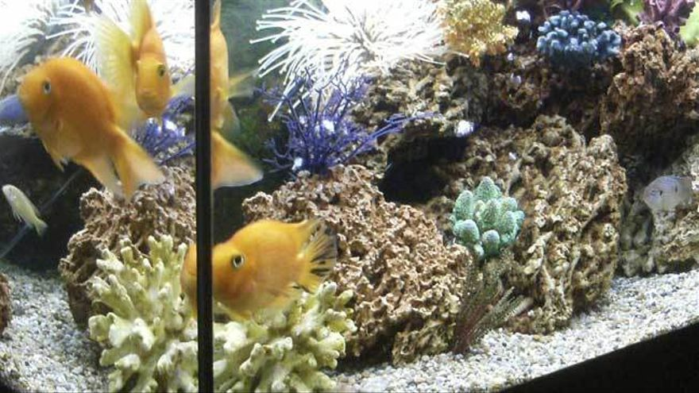

En esta pagina podras encontrar informacion acerca de las mascotas que muchos de nosotros tenemos en casa, asi como los cuidados
de cada mascota, la alimentacion de cada un de ellos, te informamos acerca de las enfermedades que pueden contraer nuestros
amigitos.
Como dueño responsable, sabes que tu mascota debe recibir atención médica para mantener su salud estable y lo más importante es que seas consciente de que no sólo deberás llevar a tu perro o gato con el veterinario cuando presente algún padecimiento, sino que las visitas deben ser rutinarias, precisamente para evitar que los infortunios aparezcan y así darle a tu mascota la mejor calidad de vida posible.
Existen una serie de mascotas que son las más comunes a lo largo de todo el mundo. El perro es, sin duda, el rey de los animales domésticos.
1.Perros
Las mascotas más comunes son los perros. Estos animales se alzan como el animal doméstico por excelencia. Su instinto de protección y la compañía que ofrecen hacen que los perros se conviertan en un miembro más de muchas familias.
2.Gatos
Los gatos son los segundos en la lista de mascotas. Estos animales domésticos tienen grandes adeptos por la compañía infinita que ofrecen. No obstante, son muchas las personas reacias a convivir con un gato.
3.Hámsters
Estos roedores son uno de los principales animales domésticos en las casas con niños. Los hámsters son, en muchas ocasiones, la primera mascota para algunos pequeños. No requiere demasiados cuidados especiales pero sí hay que garantizarle unas buenas condiciones higiénicas y de temperatura. El hámster debe contar con una jaula homologada en la que comerá, dormirá y jugará.
4.Peces

Son una de las mascotas más tranquilas. No dan apenas trabajo pero su presencia en la pecera ofrece compañía y tranquilidad a sus amos. Las peceras son un elemento fundamental para la convivencia entre los peces y los humanos. Debe tratarse de un espacio que cumpla todas las normas sanitarias y de seguridad para estos animales de compañía.